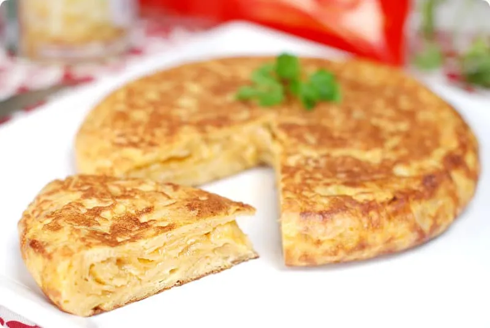

Tortilla de Patatas
Ingredientes
- 5 huevos
- 4 patatas medianas
- 1 cebolla
- Aceite de oliva virgen extra
- Sal

Elaboración
- Pela las patatas y la cebolla y córtalas en láminas finas.
- Fríelas a fuego medio en abundante aceite durante unos 20 minutos, hasta que estén tiernas.
- Escúrrelas bien del aceite y añade sal al gusto.
- Bate los huevos en un bol grande y mézclalos con las patatas y la cebolla.
- Calienta una sartén con un poco de aceite y vierte la mezcla.
- Cuaja a fuego medio unos 3 minutos y dale la vuelta con ayuda de un plato.
- Cuaja el otro lado 2 minutos más y sirve.
Descargar receta en PDF
Volver a la carta